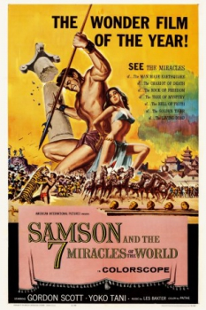

Also known as:Maciste alla corte del Gran Khan (original title)
Country:Italy, 80 minutes
Spoken languages:
Genres:Adventure, Fantasy
Director(s):Riccardo Freda
Writer(s):Oreste Biancoli, Duccio Tessari
Video Codec:Unknown
Number: 1623


Certification:
Storyline:
Sam must rescue a beautiful Chinese princess from a marauding horde of warriors.
Cast:
Medium: Original DVD,
Comments: Part of: Wrath of the Sword - 20 movie collection
Loaned: No
Aspect ratio: Unknown